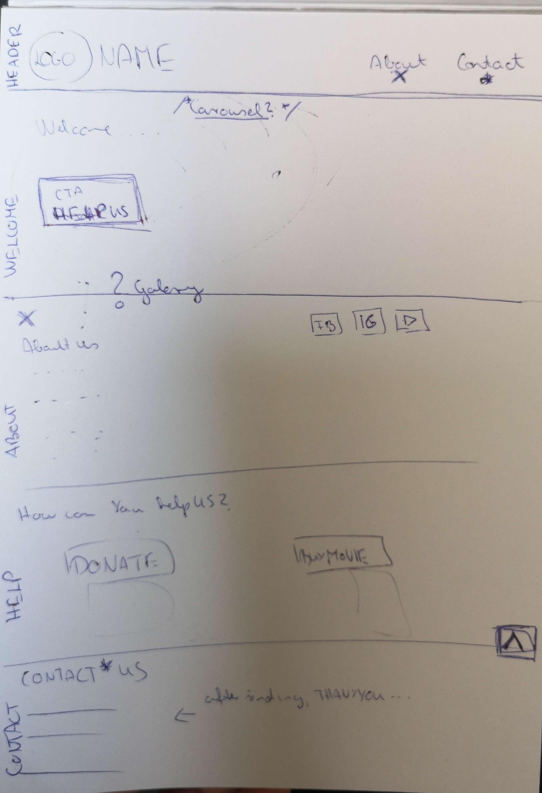

Save horses
There are many NGOs (non-governmental organizations) specialized for great causes. I had to find one who I'd like to help with a new website because it lacked a site or had one, but an old, not so useful one. I chose an organization that dealt with rescuing horses.
Here is the original website's url: Saving america's horses
Development process
Github repository of this projectPlanning the structure of the website.
The website is divided into seven sections. The first is the header, which remains at the top even when you scroll down. The logo scrolls the entire page back to the top. There are three other buttons at the top: About, Contact, and Help Us, which scroll the page to their respective sections.
The second section is the welcome area, which displays the purpose of the organization and includes a Help Us button that navigates to the Donate section.
The third section is a carousel that shows several pictures and stops spinning when the user hovers over it with their mouse cursor.
The fourth section, About Us, provides details about the organization and includes three social media buttons that redirect the user.
The fifth section is the Donate area, which contains a link to the organization's website where their film can be watched to encourage donations.
The sixth section is the Contact Us area, where you can send a message to the organization.
The final section showcases the awards the organization has received.
The page also contains a button on the right side which scrolls the entire page back to the top.
Selecting Color
There are many websites that help you find the proper color palette for your website. It's helpful to check the contrast of your colors and how they match together. My advice is to use Coolors.co, which can generate a color palette for you, allowing you to choose the one you like.
Selecting Font Type
I used the Playfair Display font from Google Fonts.
Responsive Webdesign
The website's buttons work responsively with respect to the width of the viewport. They move below the headline as you shrink the page.
Contact Us Form
I used a controlled form for React inputs, meaning all the field values are stored in a useState variable.